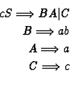

|
Cheatham Sattley is an easy to implement, tabular method of language
parsing. It is a top-down system, like recursive descent, but it is a
predictive system where, based on alternatives in syntax, the parser
attempts to guess at what language element will come next.
Cheatham Sattley is good at parsing languages whose syntax can be
stated in the following format:
<lhs> ::= <e11><e12> | <e21><e22>
Of course some elements can be terminals or empty elements.
When told to match a <lhs>, Cheatham Sattley will initially predict
that the first token presented should be a e11. If this
prediction fails, it will next try to parse the same initial token as
a e21. This process can continue n times until either the
token is matched or no matches occur. In essence, Cheatham Sattley is
a tree walking algorithm.

|